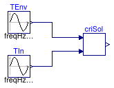

Package containing examples demonstrating the use of Controls.BaseClasses models
This package contains examples demonstrating the use of models that can be found in Buildings.Fluid.SolarCollectors.Controls.BaseClasses.
Extends from Modelica.Icons.ExamplesPackage (Icon for packages containing runnable examples).
| Name | Description |
|---|---|
| Example showing the use of GCritCalc |
 Buildings.Fluid.SolarCollectors.Controls.BaseClasses.Examples.GCritCalc
Buildings.Fluid.SolarCollectors.Controls.BaseClasses.Examples.GCritCalc
Example showing the use of GCritCalc

This model provides an example of how to use the
Buildings.Fluid.SolarCollectors.Controls.BaseClasses.GCritCalc model.
Extends from Modelica.Icons.Example (Icon for runnable examples).